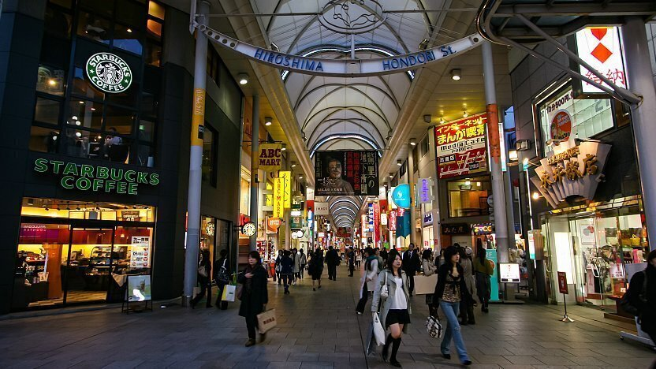
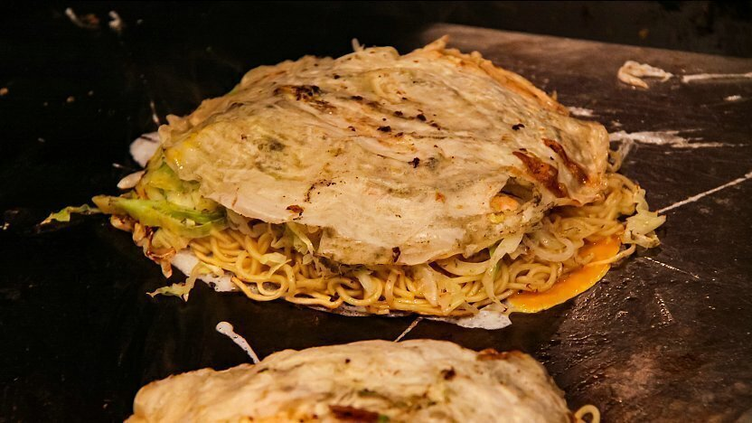
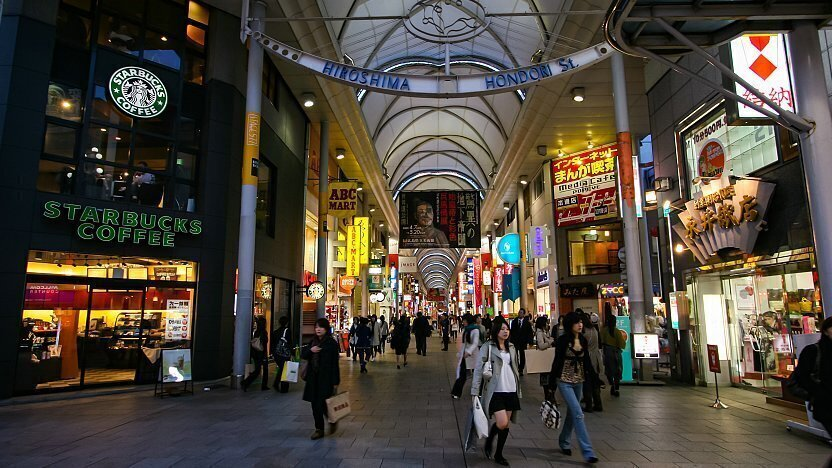
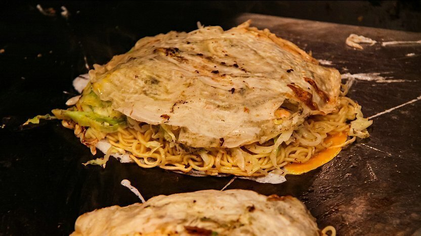

Hiroshima
 



Introduction
With a population of more than a million, Hiroshima (広島) is the largest city in the Chugoku Region. It gained notoriety for this unfortunate distinction after the first atomic bomb was launched over the city on August 6, 1945. Nearly everything within a two-kilometre radius was destroyed by the bomb's immense destroying power.
Massive efforts were made to reconstruct the city after the war. The city turned out to be livable despite predictions to the contrary. Historic landmarks like Hiroshima Castle and Shukkeien Garden that had been destroyed have been rebuilt. Peace Memorial Park, a sizable park that would embody the goals of the reborn city, was erected in the city's heart.
Hiroshima Castle
In contrast to hilltop and mountainside castles, Hiroshima Castle (広島城, Hiroshimajō), also known as the Carp Castle, is an excellent example of a castle constructed on a plain in the middle of a city. Its grounds are encircled by a moat, and its main keep is five floors high. A shrine, some Ninomaru remains, and a few rebuilt structures are all located inside the castle's boundaries (second circle of defense). 13 years after being destroyed by atomic bomb, the main keep of the castle was reconstructed in ferro-concrete with a lovely exterior made largely of wood. The history of Hiroshima, the castle, and Japanese castles in general are all covered in the instructive museum housed inside the keep, and the top level offers sweeping views of the neighbourhood. Visitors are allowed inside the structures to observe exhibitions detailing their reconstruction.
Peace Memorial Park
One of the most recognisable landmarks in Hiroshima is the Peace Memorial Park (平和記念公園, Heiwa Kinen Kōen). The park of almost 120,000 square metre will probably be discovered by tourists who aren't even seeking for it. The Peace Memorial Museum serves as the park's primary structure. The museum, which consists of two structures, explores the background of Hiroshima and the invention of the nuclear weapon. However, the events of August 6—the bombing and the resulting human suffering—are the major emphasis of the book. The private information shown is highly unsettling and serves as a warning not to take tranquilly for granted.
The former Prefectural Industrial Promotion Hall is now known as the A-Bomb Dome. The structure functioned as a venue for showcasing Hiroshima's commercial sectors. It was one of the few structures that was still standing when the bomb detonated until now. It has been recognized as a UNESCO World Heritage Site as the physical representation of Hiroshima's distinct past.
Summary
In summary, Hiroshima acquires a unique value in the aspect of historical background, and this makes it stands out of the travel attractions in Japan. If one can visit Hiroshima, he will be amazed by its vitality, which is hardly expected from a post-war country that has been destroyed once. Aside the museum and various monument, the local delicacy in Hiroshima is also unmissable including Hiroshima-style Okonomiyaki and oysters.